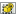
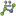

È possibile utilizzare il codice per creare il pulsante, copiando il testo sullo sfondo grigio. Questo codice crea un collegamento con lo strumento, sia sull'immagine che sul testo.
Se necessario, è possibile modificare la visualizzazione del testo (l'ultimo campo in grassetto) [[Image:Arch_Wall.png|32px|Wall|link=Arch_Wall]][[Arch_Wall| Arch_Wall]] oppure,
eliminare il testo, e il suo collegamento [[Image:Arch_Wall.png|32px|Wall|link=Arch_Wall]] [[Arch_Wall|Arch_Wall]] ,
Gli stessi strumenti sono disponibili nella forma di Icone. Vedere anche Artwork.
Contents
 Modulo Architettura
Modulo Architettura
{{KEY|[[File:Arch Wall.png|16px|Wall|link=Arch Wall/it]] [[Arch Wall/it|Parete]]}}
{{KEY|[[File:Arch Structure.png|16px|Arch Structure|link=Arch Structure/it]] [[Arch Structure/it|Struttura]]}}
{{KEY|[[File:Arch Cell.png|16px|Arch Cell|link=Arch Cell/it]] [[Arch Cell/it|Cella]]}}
{{KEY|[[File:Arch Floor.png|16px|Arch Floor|link=Arch Floor/it]] [[Arch Floor/it|Piano]]}}
{{KEY|[[File:Arch Building.png|16px|Arch Building|link=Arch Building/it]] [[Arch Building/it|Edificio]]}}
{{KEY|[[File:Arch Site.png|16px|Arch Site|link=Arch Site/it]] [[Arch Site/it|Sito]]}}
{{KEY|[[File:Arch Window.png|16px|Arch Window|link=Arch Window/it]] [[Arch Window/it|Finestra]]}}
{{KEY|[[File:Arch SectionPlane.png|16px|Arch SectionPlane|link=Arch SectionPlane/it]] [[Arch SectionPlane/it|Piano di sezione]]}}
{{KEY|[[File:Arch Axis.png|16px|Arch Axis|link=Arch Axis/it]] [[Arch Axis/it|Asse]]}}
{{KEY|[[File:Arch Roof.png|16px|Arch Roof|link=Arch Roof/it]] [[Arch Roof/it|Tetto]]}}
{{KEY|[[File:Arch Add.png|16px|Arch Add|link=Arch Add/it]] [[Arch Add/it|Aggiungi componente]]}}
{{KEY|[[File:Arch Remove.png|16px|Arch Remove|link=Arch Remove/it]] [[ Arch Remove/it|Rimuovi componente]]}}
Strumenti di modifica di Architettura
{{KEY|[[File:Arch SplitMesh.png|16px|Arch SplitMesh|link=Arch SplitMesh/it]] [[Arch SplitMesh/it|Dividi Mesh]]}}
{{KEY|[[File:Arch MeshToShape.png|16px|Arch MeshToShape|link=Arch MeshToShape/it]] [[Arch MeshToShape/it|Da Mesh a Forma]]}}
{{KEY|[[File:Arch RemoveShape.png|16px|Arch RemoveShape|link=Arch RemoveShape/it]] [[Arch RemoveShape/it|Rimuovi Forma]]}}
{{KEY|[[File:Arch SelectNonSolidMeshes.png|16px|Arch SelectNonSolidMeshes|link=Arch SelectNonSolidMeshes/it]] [[Arch SelectNonSolidMeshes/it|Seleziona non solidi]]}}
{{KEY|[[File:Arch CloseHoles.png|16px|Arch CloseHoles|link=Arch CloseHoles/it]] [[Arch CloseHoles/it|Chiudi fori]]}}
{{KEY|[[File:Arch Check.png|16px|Arch Check|link=Arch Check/it]] [[Arch Check/it|Controlla]]}}
 Ambiente Draft
Ambiente Draft
{{KEY|[[File:Draft Line.png|16px|Draft Line|link=Draft Line]] [[Draft Line|Draft Line]]}}
{{KEY|[[File:Draft Wire.png|16px|Draft Wire|link=Draft Wire]] [[Draft Wire|Draft Wire]]}}
{{KEY|[[File:Draft Circle.png|16px|Draft Circle|link=Draft Circle]] [[Draft Circle|Draft Circle]]}}
{{KEY|[[File:Draft Arc.png|16px|Draft Arc|link=Draft Arc]] [[Draft Arc|Draft Arc]]}}
{{KEY|[[File:Draft Polygon.png|16px|Draft Polygon|link=Draft Polygon]] [[Draft Polygon|Draft Polygon]]}}
{{KEY|[[File:Draft Rectangle.png|16px|Draft Rectangle|link=Draft Rectangle]] [[Draft Rectangle|Draft Rectangle]]}}
{{KEY|[[File:Draft Text.png|16px|Draft Text|link=Draft Text]] [[Draft Text|Draft Text]]}}
{{KEY|[[File:Draft Dimension.png|16px|Draft Dimension|link=Draft Dimension]] [[Draft Dimension|Draft Dimension]]}}
{{KEY|[[File:Draft BSpline.png|16px|Draft BSpline|link=Draft BSpline]] [[Draft BSpline|Draft BSpline]]}}
{{KEY|[[File:Draft Point.png|Point|32px|link=Draft Point]] [[Draft Point|Draft Point]]}}
Draft Editions of objects
{{KEY|[[File:Draft SelectGroup.png|16px|Draft SelectGroup|link=Draft SelectGroup]] [[Draft SelectGroup|Draft SelectGroup]]}}
{{KEY|[[File:Draft AddToGroup.png|16px|Draft AddToGroup|link=Draft AddToGroup]] [[Draft AddToGroup|Draft AddToGroup]]}}
{{KEY|[[File:Draft Move.png|16px|Draft Move|link=Draft Move]] [[Draft Move|Draft Move]]}}
{{KEY|[[File:Draft Rotate.png|16px|Draft Rotate|link=Draft Rotate]] [[Draft Rotate|Draft Rotate]]}}
{{KEY|[[File:Draft Offset.png|16px|Draft Offset|link=Draft Offset]] [[Draft Offset|Draft Offset]]}}
{{KEY|[[File:Draft Trimex.png|16px|Draft Trimex|link=Draft Trimex]] [[Draft Trimex|Draft Trimex]]}}
{{KEY|[[File:Draft Upgrade.png|16px|Draft Upgrade|link=Draft Upgrade]] [[Draft Upgrade|Draft Upgrade]]}}
{{KEY|[[File:Draft Downgrade.png|16px|Draft Downgrade|link=Draft Downgrade]] [[Draft Downgrade|Draft Downgrade]]}}
{{KEY|[[File:Draft Scale.png|16px|Draft Scale|link=Draft Scale]] [[Draft Scale|Draft Scale]]}}
{{KEY|[[File:Draft PutOnSheet.png|16px|Draft Drawing|link=Draft Drawing]] [[Draft Drawing|Draft Drawing]]}}
{{KEY|[[File:Draft Edit.png|16px|Draft Edit|link=Draft Edit]] [[ Draft Edit|Draft Edit]]}}
{{KEY|[[File:Draft WireToBSpline.png|16px|Draft WireToBSpline|link=Draft WireToBSpline]] [[Draft WireToBSpline|Draft WireToBSpline]]}}
{{KEY|[[File:Draft AddPoint.png|16px|Draft AddPoint|link=Draft AddPoint]] [[Draft AddPoint|Draft AddPoint]]}}
{{KEY|[[File:Draft DelPoint.png|16px|Draft DelPoint|link=Draft DelPoint]] [[Draft DelPoint|Draft DelPoint]]}}
{{KEY|[[File:Draft Shape2DView.png|16px|Draft Shape2DView|link=Draft Shape2DView]] [[Draft Shape2DView|Draft Shape2DView]]}}
{{KEY|[[File:Draft Draft2Sketch.png|16px|Draft Draft2Sketch|link=Draft Draft2Sketch]] [[Draft Draft2Sketch|Draft Draft2Sketch]]}}
{{KEY|[[File:Draft Array.png|16px|Draft Array|link=Draft Array]] [[Draft Array|Draft Array]]}}
{{KEY|[[File:Draft Clone.png|16px|Draft Clone|link=Draft Clone]] [[Draft Clone|Draft Clone]]}}
Draft Snap
{{KEY|[[File:Snap Midpoint.png|16px|Snap Midpoint|link=Draft Snap]] [[Draft Snap|Snap Midpoint]]}}
{{KEY|[[File:Snap Perpendicular.png|16px|Snap Perpendicular|link=Draft Snap]] [[Draft Snap|Snap Perpendicular]]}}
{{KEY|[[File:Snap Grid.png|16px|Snap Grid|link=Draft Snap]] [[Draft Snap|Snap Grid]]}}
{{KEY|[[File:Snap Intersection.png|16px|Snap Intersection|link=Draft Snap]] [[Draft Snap|Snap Intersection]]}}
{{KEY|[[File:Snap Parallel.png|16px|Snap Parallel|link=Draft Snap]] [[Draft Snap|Snap Parallel]]}}
{{KEY|[[File:Snap Endpoint.png|16px|Snap Endpoint|link=Draft Snap]] [[Draft Snap|Snap Endpoint]]}}
{{KEY|[[File:Snap Angle.png|16px|Snap Angle|link=Draft Snap]] [[Draft Snap|Snap Angle]]}}
{{KEY|[[File:Snap Center.png|16px|Snap Center|link=Draft Snap]] [[Draft Snap|Snap Center]]}}
{{KEY|[[File:Snap Extension.png|16px|Snap Extension|link=Draft Snap]] [[Draft Snap|Snap Extension]]}}
{{KEY|[[File:Snap Near.png|16px|Snap Near|link=Draft Snap]] [[Draft Snap|Snap Near]]}}
{{KEY|[[File:Snap Ortho.png|16px|Snap Ortho|link=Draft Snap]] [[Draft Snap|Snap Ortho]]}}
{{KEY|[[File:Draft ShowSnapBar.png|16px|Draft ShowSnapBar|link=Draft Snap]] [[Draft Snap|Draft ShowSnapBar]]}}
{{KEY|[[File:Snap Lock.png|16px|Snap Lock|link=Draft Snap]] [[Draft Snap|Snap Lock]]}}
Modulo Plot
{{KEY|[[File:Plot Save.png|16px|Plot Save|link=Plot Save/it]] [[Plot Save/it|Salva grafico]]}}
{{KEY|[[File:Plot Axes.png|16px|Plot Axes|link=Plot Axes/it]] [[Plot Axes/it|Configura assi]]}}
{{KEY|[[File:Plot Series.png|16px|Plot Series|link=Plot Series/it]] [[Plot Series/it|Configura serie]]}}
{{KEY|[[File:Plot Grid.png|16px|Plot Grid|link=Plot Grid/it]] [[Plot Grid/it|Mostra/Nascondi griglia]]}}
{{KEY|[[File:Plot Legend.png|16px|Plot Legend|link=Plot Legend/it]] [[Plot Legend/it|Mostra/Nascondi legenda]]}}
{{KEY|[[File:Plot Labels.png|16px|Plot Labels|link=Plot Labels/it]] [[Plot Labels/it|Imposta etichette]]}}
 Imposta posizioni e dimensioni
Imposta posizioni e dimensioni
{{KEY|[[File:Plot Positions.png|16px|Plot Positions|link=Plot Positions/it]] [[Plot Positions/it|Imposta posizioni e dimensioni]]}}
 Ambiente Drawing
Ambiente Drawing
{{KEY|[[File:Drawing Open SVG.png|16px|Drawing Open SVG|link=Drawing Open SVG/it]] [[Drawing Open SVG/it|Apri SVG]]}}
{{KEY|[[File:Drawing Landscape A3.png|16px|Drawing Landscape A3|link=Drawing Landscape A3/it]] [[Drawing Landscape A3/it|A3 orizzontale]]}}
 Inserisci vista nel disegno
{{KEY|[[File:Drawing View.png|16px|Drawing View|link=Drawing View/it]] [[Drawing View/it|Inserici vista nel disegno]]}}
{{KEY|[[File:Drawing Orthoviews.png|16px|Drawing Orthoviews|link=Drawing Orthoviews/it]] [[Drawing Orthoviews/it|Inserisci viste ortogonali]]}}
{{KEY|[[File:Drawing Openbrowser.png|16px|Drawing Openbrowser|link=Drawing Openbrowser/it]] [[Drawing Openbrowser/it|Apri finestra browser]]}}
{{KEY|[[File:Drawing Annotation.png|16px|Drawing Annotation|link=Drawing Annotation/it]] [[Drawing Annotation/it|Annotazione]]}}
{{KEY|[[File:Drawing Clip.png|16px|Drawing Clip|link=Drawing Clip/it]] [[Drawing Clip/it|Clip]]}}
{{KEY|[[File:Drawing Save.png|16px|Drawing Save|link=Drawing Save/it]] [[Drawing Save/it|Salva]]}}
Fem
 Ambiente Immagine
Ambiente Immagine
 Modulo Mesh
Modulo Mesh
 Modulo OpenSCAD
Modulo OpenSCAD
{{KEY|[[File:OpenSCAD ColorCodeShape.png|16px|OpenSCAD ColorCodeShape|link=OpenSCAD ColorCodeShape/it]] [[OpenSCAD ColorCodeShape/it|ColorCodeShape]]}}
{{KEY|[[File:OpenSCAD Edgestofaces.png|16px|OpenSCAD Edgestofaces|link=OpenSCAD Edgestofaces/it]] [[OpenSCAD Edgestofaces/it|Converti i bordi in facce]]}}
{{KEY|[[File:OpenSCAD RefineShapeFeature.png|16px|OpenSCAD RefineShapeFeature|link=OpenSCAD RefineShapeFeature/it]] [[OpenSCAD RefineShapeFeature/it|Affina forma]]}}
{{KEY|[[File:OpenSCAD ExpandPlacements.png|16px|OpenSCAD ExpandPlacements|link=OpenSCAD ExpandPlacements/it]] [[OpenSCAD ExpandPlacements/it|Espandi posizionamenti]]}}
{{KEY|[[File:OpenSCAD ReplaceObject.png|16px|OpenSCAD ReplaceObject|link=OpenSCAD ReplaceObject/it]] [[OpenSCAD ReplaceObject/it|Sostituisci oggetti]]}}
 Rimuovi gli oggetti e i loro figli
Rimuovi gli oggetti e i loro figli
{{KEY|[[File:OpenSCAD RemoveSubtree.png|16px|OpenSCAD RemoveSubtree|link=OpenSCAD RemoveSubtree/it]] [[OpenSCAD RemoveSubtree/it|Rimuovi gli oggetti e i loro figli]]}}
{{KEY|[[File:OpenSCAD AddOpenSCADElement.png|16px|OpenSCAD AddOpenSCADElement|link=OpenSCAD AddOpenSCADElement/it]] [[OpenSCAD AddOpenSCADElement/it|Aggiungi un elemento OpenSCAD]]}}
 Nodulo Part
Nodulo Part
{{KEY|[[File:Part Box.png|16px|Part Box|link=Part Box/it]] [[Part Box/it|Cubo]]}}
{{KEY|[[File:Part Cylinder.png|16px|Part Cylinder|link=Part Cylinder/it]] [[Part Cylinder/it|Cilindro]]}}
{{KEY|[[File:Part Sphere.png|16px|Part Sphere|link=Part Sphere/it]] [[Part Sphere/it|Sfera]]}}
{{KEY|[[File:Part Cone.png|16px|Part Cone|link=Part Cone/it]] [[Part Cone/it|Cono]]}}
{{KEY|[[File:Part Torus.png|16px|Part Torus|link=Part Torus/it]] [[Part Torus/it|Toro]]}}
[[Image:Part CreatePrimitives.png|16px|Part CreatePrimitives|link=Part CreatePrimitives/it]] [[Part CreatePrimitives/it|Crea primitive]]
{{KEY|[[File:Part Shapebuilder.png|16px|Part Shapebuilder|link=Part Shapebuilder/it]] [[Part Shapebuilder/it|Affina forma]]}}
Part Strumenti di modifica
{{KEY|[[File:Part Extrude.png|16px|Part Extrude|link=Part Extrude/it]] [[Part Extrude/it|Estrudi]]}}
{{KEY|[[File:Part Revolve.png|16px|Part Revolve|link=Part Revolve/it]] [[Part Revolve/it|Ruota]]}}
{{KEY|[[File:Part Mirror.png|16px|Part Mirror|link=Part Mirror/it]] [[Part Mirror/it|Rifletti]]}}
{{KEY|[[File:Part Fillet.png|16px|Part Fillet|link=Part Fillet/it]] [[Part Fillet/it|Raccordo]]}}
{{KEY|[[File:Part Chamfer.png|16px|Part Chamfer|link=Part Chamfer/it]] [[Part Chamfer/it|Smusso]]}}
Part Strumenti per operazioni Booleane
{{KEY|[[File:Part Booleans.png|16px|Part Booleans|link=Part Booleans/it]] [[Part Booleans/it|Operazione booleana]]}}
{{KEY|[[File:Part Cut.png|16px|Part Cut|link=Part Cut/it]] [[Part Cut/it|Taglia]]}}
{{KEY|[[Image:Part Union.png|32px|Part Union|link=Part Union/it]] [[Part Union/it|Unione]]}}
{{KEY|[[File:Part Common.png|16px|Part Common|link=Part Common/it]] [[Part Common/it|Intersezione]]}}
{{KEY|[[File:Part Section.png|16px|Part Section|link=Part Section/it]] [[Part Section/it|Piano di sezione]]}}
 Ambiente PartDesign
Ambiente PartDesign
PartDesign Strumenti di costruzione
{{KEY|[[File:PartDesign Pad.png|16px|PartDesign Pad|link=PartDesign Pad/it]] [[PartDesign Pad/it|Prisma]]}}
{{KEY|[[File:PartDesign Pocket.png|16px|PartDesign Pocket|link=PartDesign Pocket/it]] [[PartDesign Pocket/it|Tasca]]}}
{{KEY|[[File:PartDesign Revolution.png|16px|PartDesign Revolution|link=PartDesign Revolution/it]] [[PartDesign Revolution/it|Rivoluzione]]}}
{{KEY|[[File:PartDesign Groove.png|16px|PartDesign Groove|link=PartDesign Groove/it]] [[PartDesign Groove/it|Scanalatura]]}}
PartDesign Strumenti di modifica
{{KEY|[[File:PartDesign Fillet.png|16px|PartDesign Fillet|link=PartDesign Fillet/it]] [[PartDesign Fillet/it|Raccordo]]}}
{{KEY|[[File:PartDesign Chamfer.png|16px|PartDesign Chamfer|link=PartDesign Chamfer/it]] [[PartDesign Chamfer/it|Smusso]]}}
PartDesign Strumenti di trasformazione
{{KEY|[[File:PartDesign Mirrored.png|16px|PartDesign Mirrored|link=PartDesign Mirrored]] [[PartDesign Mirrored/it|Riflesso]]}}
{{KEY|[[File:PartDesign LinearPattern.png|16px|PartDesign LinearPattern|link=PartDesign LinearPattern/it]] [[PartDesign LinearPattern/it|Serie lineare]]}}
{{KEY|[[File:PartDesign PolarPattern.png|16px|PartDesign PolarPattern|link=PartDesign PolarPattern/it]] [[PartDesign PolarPattern/it|Serie polare]]}}
{{KEY|[[File:PartDesign Scaled.png|16px|PartDesign Scaled|link=PartDesign Scaled/it]] [[PartDesign Scaled/it|Scala]]}}
{{KEY|[[File:PartDesign MultiTransform.png|16px|PartDesign MultiTransform|link=PartDesign MultiTransform/it]] [[PartDesign MultiTransform/it|MultiTrasformazione]]}}

{{KEY|[[File:Part Import.svg|16px|Part Import]]}}
Modulo Points
 Ambiente Raytracing
Ambiente Raytracing
{{KEY|[[File:Raytracing New.png|16px|Raytracing New|link=Raytracing New/it]] [[Raytracing New/it|Nuovo Raytracing]]}}
{{KEY|[[File:Raytracing Export.png|16px|Raytracing Export|link=Raytracing Export/it]] [[Raytracing Export/it|Raytracing Export]]}}
{{KEY|[[File:Raytracing Camera.png|16px|Raytracing Camera|link=Raytracing Camera/it]] [[Raytracing Camera/it|Raytracing Camera]]}}
{{KEY|[[File:Raytracing Part.png|16px|Raytracing Part|link=Raytracing Part/it]] [[Raytracing Part/it|Raytracing Part]]}}
 Ambiente Robot
Ambiente Robot
{{KEY|[[File:Robot CreateRobot.png|16px|Robot CreateRobot|link=Robot CreateRobot]] [[Robot CreateRobot/it|Crea Robot]]}}
{{KEY|[[File:Robot Simulate.png|16px|Robot Simulate|link=Robot Simulate]] [[Robot Simulate/it|Simula Robot]]}}
{{KEY|[[File:Robot Export.png|16px|Robot Export|link=Robot Export]] [[Robot Export/it|Esporta Robot]]}}
Imposta la posizione di partenza
{{KEY|[[File:Robot SetHomePos.png|16px|Robot SetHomePos|link=Robot SetHomePos]] [[Robot SetHomePos/it|Imposta la posizione di partenza]]}}
 Sposta alla posizione di partenza
Sposta alla posizione di partenza
{{KEY|[[File:Robot RestoreHomePos.png|16px|Robot RestoreHomePos|link=Robot RestoreHomePos]] [[Robot RestoreHomePos/it|Sposta alla posizione di partenza]]}}
Crea una traiettoria non parametrica
{{KEY|[[File:Robot CreateTrajectory.png|16px|Robot CreateTrajectory|link=Robot CreateTrajectory]] [[Robot CreateTrajectory/it|Crea Percorso]]}}
 Imposta l'orientamento predefinito
{{KEY|[[File:Robot SetDefaultOrientation.png|16px|Robot SetDefaultOrientation|link=Robot SetDefaultOrientation]] [[Robot SetDefaultOrientation/it|Imposta l'orientamento predefinito]]}}
{{KEY|[[File:Robot SetDefaultValues.png|16px|Robot SetDefaultValues|link=Robot SetDefaultValues]] [[Robot SetDefaultValues/it|Imposta i valori predefiniti]]}}
Inserisci il punto in traiettoria
{{KEY|[[File:Robot InsertWaypoint.png|16px|Robot InsertWaypoint|link=Robot InsertWaypoint]] [[Robot InsertWaypoint/it|Inserisci il punto in traiettoria]]}}
 Inserisci il punto di preselezione in traiettoria
Inserisci il punto di preselezione in traiettoria
{{KEY|[[File:Robot InsertWaypointPre.png|16px|Robot InsertWaypointPre|link=Robot InsertWaypointPre]] [[Robot InsertWaypointPre/it|Inserisci il punto di preselezione in traiettoria]]}}
Crea una traiettoria parametrica
{{KEY|[[File:Robot Edge2Trac.png|16px|Robot Edge2Trac|link=Robot Edge2Trac]] [[Robot Edge2Trac/it|Da spigolo a traiettoria]]}}
{{KEY|[[File:Robot TrajectoryDressUp.png|16px|Robot TrajectoryDressUp|link=Robot TrajectoryDressUp]] [[Robot TrajectoryDressUp/it|Maschera una traiettoria]]}}
{{KEY|[[File:Robot TrajectoryCompound.png|16px|Robot TrajectoryCompound|link=Robot TrajectoryCompound]] [[Robot TrajectoryCompound/it|Traiettoria composta]]}}
 Gli strumenti di Ship
Gli strumenti di Ship
Carica una geometria
[[Image:FreeCAD-Ship-LoadIco.png|32px|FreeCAD-Ship-LoadIco|link=]] Carica una geometria
 FreeCAD Ship
FreeCAD Ship
[[Image:FreeCAD-Ship-Ico.png|32px|FreeCAD-Ship|link=]] FreeCAD-Ship
 Crea una nuova nave
Crea una nuova nave
[[Image:FreeCAD-Ship-ShipInstance.png|32px|FreeCAD-Ship-ShipInstance|link=]] Crea una nuova nave
 Disegno del contorno
Disegno del contorno
[[Image:FreeCAD-Ship-OutlineDrawIco.png|32px|FreeCAD-Ship-OutlineDraw|link=]] Disegno del contorno
 Area della sezione trasversale
Area della sezione trasversale
[[Image:FreeCAD-Ship-AreaCurveIco.png|32px|FreeCAD-Ship-AreaCurve|link=]] Area della sezione trasversale
 Idrostatica
Idrostatica
[[Image:FreeCAD-Ship-HydrostaticsIco.png|32px|FreeCAD-Ship-Hydrostatics|link=]] Idrostatica